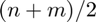
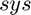
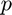
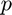

rmss
Generate a random continuous multilinear states-space model
Contents
Syntax
rmss rmss(n) rmss(n,m) rmss(n,m,p) rmss(n,m,p,r) rmss(n,m,p,r,Ts)
Description
rmss(n) Generates a random n-th order continuous-time multilinear state-space object sys. A random positive integer for n is drawn between 1 and 10 a standard normal distribution with a standard deviation of 10. The number of inputs and outputs are set to 1. The rank of the decomposed tensor defaults to the nearest integer of n/2.
rmss(n) Generates a random n-th order continuous-time multilinear state-space object sys.The number of inputs and outputs are set to 1. The rank of the decomposed tensor defaults to the nearest integer of n/2.
rmss(n,m) Generates a random n-th order continuous-time multilinear state-space object sys with m inputs. The number of outputs are set to 1. The rank of the decomposed tensor defaults to the nearest integer of .
rmss(n,m,p) Generates a random n-th order continuous-time multilinear state-space object  with  inputs and  outputs. The rank of the decomposed tensor defaults to the nearest integer of (n+m)/2.
inputs and  outputs. The rank of the decomposed tensor defaults to the nearest integer of (n+m)/2.
rmss(n,m,p,r) Generates a random n-th order continuous-time multilinear state-space object sys with inputs and outputs. The decomposed tensor has the rank  .
.
rmss(n,m,p,r,Ts) Generates a random n-th order discrete-time multilinear state-space object sys with inputs, outputs, and a discretization time Ts. The decomposed tensor has the rank .
Input Arguments
n number of states, defaults to random number between 1 and a positive random integer drawn from a standard normal distribution with standard deviation 10
m number of inputs, defaults to 1
p number of outputs, defaults to 1
r rank of the resulting decomposed tensor, defaults to the nearest integer of (n+m)/2
Output Arguments
msys mss object
Example
For a continuous-time system with n=4 states, m=1 input, p=1 output, and a rank of r=6:
msys=rmss(4,1,1,6)
msys =
mss with properties:
F: [1×1 CPN1]
G: [1×1 CPN1]
n: 4
m: 1
p: 1
ntype: '1'
ts: 0
See also
mss,